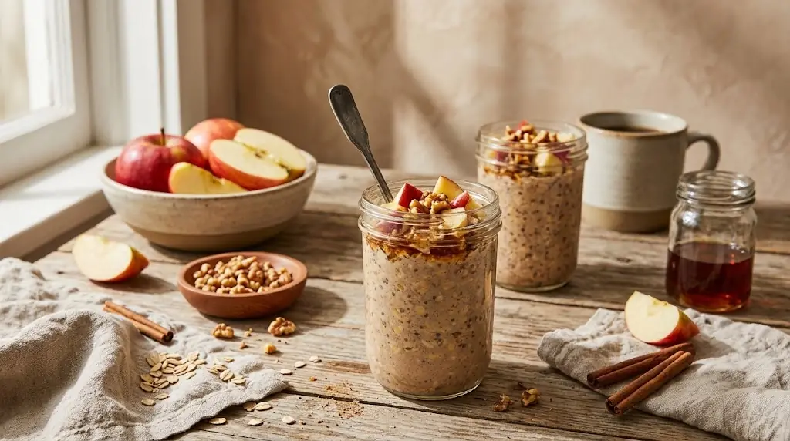

0Get everything out first
Do this the night before. It only takes a few minutes.
All out? This one's quick from here.
1Grate the apple
Use the big holes on the grater. Stop when you have about ¼ cup. No need to peel it.
2Put it all in the jar
Check each one off as it goes in.
3Stir
Stir until there are no dry oats left and the skyr is mixed in.
4Into the fridge overnight
Put the lid on and leave it in the fridge until morning. In the morning the oats are soft and it's thick like pudding.
No timer needed. Your ticks here are saved, so you can close the page and pick up in the morning.
5Top it in the morning
Give it a stir first.
Breakfast is ready. 🎉